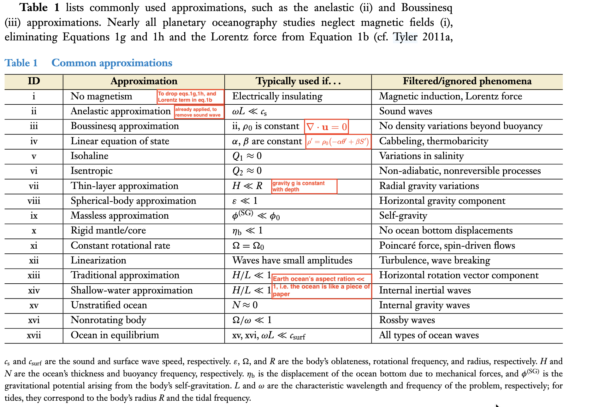

A note on the equations governing ocean dynamics
November 2026
Mathematics has always been a struggle for me, and it still is. Yet studying physical oceanography means reflecting on and deriving the mathematics, and my real appreciation of it came late, only near the end of my PhD. This note was prompted by the review article The Physical Oceanography of Ice-Covered Moons by Soderlund et al. (2024). I do not understand every term of the full governing equations; I can only follow simplified versions once enough approximations have been made. Even so, it is illuminating to see the full equations from a planetary perspective and to know exactly where each assumption enters.
Equations and approximations
Taking a planetary view, Soderlund et al. (2024) write the mass, momentum, salinity and heat equations, the equation of state, Poisson's equation, the induction equation and the no-magnetic-monopole condition under the anelastic approximation (Equation 1). Each variable is split into a background state (subscript \(0\)), assumed adiabatic, isohaline and hydrostatic, and a perturbation (denoted by a prime):
One does not need to understand every term, let alone solve the full set, which is practically impossible. What one should know is the list of approximations that reduce it to something tractable (Figure 1).

Now, I show how these approximations simplify the governing equations.
Step 1 reduces a planetary ocean to an Earth-like one by applying approximations (i), (ix), (x) and (xi) in Figure 1: no magnetism, a massless ocean (no self-gravitation), a rigid mantle/core (no ocean-bottom displacements) and a constant rotation rate. These remove the induction and no-monopole equations (1g, 1h) together with the Lorentz force, Poisson's equation (1f) together with \(\nabla\phi'\), and the Poincaré force \(-(\mathrm{d}\boldsymbol{\Omega}/\mathrm{d}t)\times\mathbf{r}\), leaving a constant rotation vector \(\boldsymbol{\Omega}_0\).
Step 2 applies the Boussinesq approximation (iii), in which \(\rho_0\) is constant so that mass conservation (1a) becomes \(\nabla\cdot\mathbf{u}=0\), and a linear equation of state (iv), so that \(\rho'/\rho_0=-\alpha T'+\beta S'\). Equations (1a) and (1b) become
Step 3 applies the thin-layer (vii) and spherical-body (viii) approximations, so that gravity is constant and purely radial:
Step 4 is to write the momentum equation (2b) in components. Consistent with the thin-layer idea, take a local Cartesian (tangent-plane) frame at latitude \(\varphi\) on the surface of the body: \(x\) points eastward, \(y\) northward and \(r\) radially outward (upward), with unit vectors \(\mathbf{e}_x\), \(\mathbf{e}_y\), \(\mathbf{e}_r\) and velocity \(\mathbf{u}=u\,\mathbf{e}_x+v\,\mathbf{e}_y+w\,\mathbf{e}_r\). The rotation vector is parallel to the polar axis, so it has no eastward component but projects onto both the local northward and the local vertical directions:
Coriolis term. Expanding the cross product as a determinant,
where
are the (traditional) Coriolis parameter, from the local vertical component of the rotation vector, and the non-traditional Coriolis parameter, from its local horizontal (northward) component. Soderlund et al. (2024) use colatitude \(\theta_c=\pi/2-\varphi\), so their \(f=2\Omega\cos\theta_c\) is the same quantity.
Buoyancy term. With the linear equation of state from Step 2 (taking \(\theta'\approx T'\)) and gravity from (3),
so buoyancy acts only in the radial (vertical) direction.
Pressure gradient and friction. In this frame \(\nabla p' = \partial_x p'\,\mathbf{e}_x + \partial_y p'\,\mathbf{e}_y + \partial_r p'\,\mathbf{e}_r\) and \(\nu\nabla^2\mathbf{u} = \nu\nabla^2 u\,\mathbf{e}_x + \nu\nabla^2 v\,\mathbf{e}_y + \nu\nabla^2 w\,\mathbf{e}_r\), with \(\nabla^2=\partial_{xx}+\partial_{yy}+\partial_{rr}\).
Substituting these into (2b) and projecting onto \(\mathbf{e}_x\), \(\mathbf{e}_y\) and \(\mathbf{e}_r\) gives the three component equations
Two remarks. First, (4) still keeps the full Coriolis force: the \(\tilde f\) terms couple the zonal and vertical momentum equations. Second, on a real sphere, writing \(\mathrm{D}\mathbf{u}/\mathrm{D}t\) in spherical components also produces curvature (metric) terms, such as \(-uv\tan\varphi/R\) and \(uw/R\) in the zonal equation. These are negligible when the horizontal scale \(L\) is much smaller than the radius \(R\) and \(U\ll fR\), and are omitted in this tangent-plane form.
Step 5 is the traditional approximation (xiii). With horizontal and vertical scales \(L\) and \(H\), aspect ratio \(\delta=H/L\), and continuity (2a) giving \(W\sim\delta U\), both \(\tilde f\) terms are \(O(\delta\cot\varphi)\) relative to the terms beside them. For a thin ocean away from the equator they are therefore dropped, and dropped together, since as a pair they do no work. Equation (4) becomes
in which only the vertical component of rotation, \(f\), remains. This can fail near the equator and in the thick oceans of icy moons, where \(\delta\) is not small.
Step 6 compares the remaining terms with the Coriolis term. On an \(f\)-plane,
the Rossby and Ekman numbers. In the vertical equation, acceleration and friction are of order \(\delta^2 Ro\) and \(\delta^2 E\) relative to the pressure gradient. For large-scale, slow flow outside frictional boundary layers (\(Ro,\,E,\,\delta\ll1\)), the pressure gradient balances the Coriolis force in the horizontal and buoyancy in the vertical, giving geostrophic and hydrostatic balance:
or, for the geostrophic velocity,
Some consequences:
- The flow is along isobars, perpendicular to the pressure gradient, with high pressure to the right of the flow where \(f\gt0\) (northern hemisphere) and to the left where \(f\lt0\).
- On an \(f\)-plane, \(\nabla_h\cdot\mathbf{u}_g=0\), so by (2a) \(\partial w/\partial r=0\) at this order. Vertical motion appears only at the next order in \(Ro\), through frictional (Ekman) layers, or through the variation of \(f\) with latitude (\(\beta\)-effect).
- At the ocean surface \(p'=\rho_0 g\eta\), where \(\eta\) is the sea surface height, so \(\mathbf{u}_g=(g/f)\,\mathbf{e}_r\times\nabla_h\eta\): surface geostrophic currents follow contours of sea surface height, which is how they are estimated from satellite altimetry. Under an ice shell the top pressure also includes the pressure exerted by the shell, \(p'=g\rho_0\eta_s+q\) (Equation 4c of Soderlund et al., 2024).
-
Differentiating the geostrophic relations with respect to \(r\) and using the hydrostatic relation gives thermal wind balance,
\[ f\frac{\partial v}{\partial r}=-\frac{g}{\rho_0}\frac{\partial\rho'}{\partial x},\qquad f\frac{\partial u}{\partial r}=\frac{g}{\rho_0}\frac{\partial\rho'}{\partial y}, \tag{7} \]so horizontal density gradients set the vertical shear of the geostrophic flow.
Geostrophy breaks down near the equator (\(f\to0\)), in frictional boundary layers (\(E\) not small) and at small scales or fast time scales (\(Ro\) not small).
Earth's ocean: a thin shell
About 4 km of water on a sphere of radius 6400 km, thinner than the outline drawn here. Only the vertical part of rotation, \(f\), matters, so geostrophic currents stay in the surface and circle the highs and lows of pressure in each basin: clockwise around a subtropical high in the north, anticlockwise in the south. Drag the globe to turn it, or tilt it to look down on the Arctic.
An icy moon's ocean: a deep shell
Tens to hundreds of kilometres of water under ice, a sizeable fraction of the radius, so the whole rotation vector matters. In a rapidly rotating, weakly stratified ocean the same balance of pressure gradient and Coriolis force makes water move in columns parallel to the rotation axis: parcels stacked along a column circle together (the Taylor–Proudman theorem). The mantle beneath may be rigid rock or soft enough to flex with the tide; Step 1 takes it as rigid. This one turns as well: drag sideways to spin it, or up and down to look along the axis.
References
- Soderlund, K. M., Rovira-Navarro, M., Le Bars, M., Schmidt, B. E., and Gerkema, T. (2024). The physical oceanography of ice-covered moons. Annual Review of Marine Science, 16:25–53. doi:10.1146/annurev-marine-040323-101355
Acknowledgement: I thank Clau for polishing my original draft and making the visualizations.